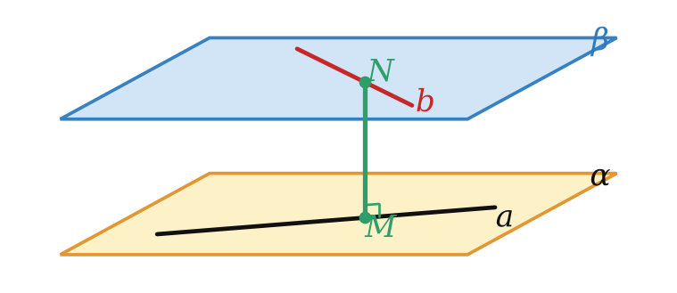

Теория
Ортогональная проекция
В § 7 мы проектировали фигуры на плоскость вдоль любой прямой l. Самый важный случай — когда l перпендикулярна плоскости. Так падает тень в полдень на экваторе, так «смотрят сверху» на план комнаты.
Если направление проектирования перпендикулярно плоскости, параллельную проекцию называют ортогональной. Дальше «проекция» без уточнений — это ортогональная проекция.
Перпендикуляр и наклонная

Пусть точка A не лежит в плоскости α. Проведём через неё прямую, перпендикулярную α (она единственная, теорема 10.4), — пусть она пересекает плоскость в точке H.
- Перпендикуляр — отрезок AH; H — основание перпендикуляра (это и есть проекция точки A).
- Наклонная — отрезок AM, где M — любая другая точка плоскости; M — основание наклонной.
- Проекция наклонной — отрезок HM.
Если из одной точки проведены к плоскости перпендикуляр и наклонная, то наклонная больше перпендикуляра.
Доказательство в одну строку: AH ⊥ HM, треугольник AHM прямоугольный, а гипотенуза AM длиннее катета AH. Из той же формулы AM² = AH² + HM² следуют полезные свойства: равные наклонные имеют равные проекции, и наоборот; большая наклонная имеет большую проекцию.
Если точка, не лежащая в плоскости многоугольника, равноудалена от его вершин, то её проекция на эту плоскость — центр описанной около многоугольника окружности.

Пусть MA = MB = MC, MO ⊥ (ABC). Прямоугольные треугольники MOA, MOB, MOC имеют общий катет MO и равные гипотенузы, поэтому равны: OA = OB = OC. Значит, O — центр описанной окружности. ∎
Расстояния в пространстве
Расстояние между фигурами — это длина самого короткого отрезка с концами на них. Теорема 11.1 говорит: от точки до плоскости самый короткий путь — перпендикуляр.
- Расстояние от точки до плоскости — длина перпендикуляра, опущенного из точки на плоскость (если точка в плоскости — 0).
- Расстояние от прямой до параллельной ей плоскости — расстояние от любой точки прямой до плоскости.
- Расстояние между параллельными плоскостями — расстояние от любой точки одной плоскости до другой.
- Расстояние между скрещивающимися прямыми — расстояние между параллельными плоскостями, в которых они лежат.
Слова «от любой точки» не случайны: все точки прямой, параллельной плоскости, удалены от неё одинаково. Перпендикуляры AA₁ и BB₁ параллельны (теорема 10.3), AB ∥ A₁B₁ (теорема 5.2), значит, AA₁B₁B — параллелограмм и AA₁ = BB₁.

Общим перпендикуляром двух скрещивающихся прямых называют отрезок, перпендикулярный обеим прямым, с концами на этих прямых. Он существует у любых двух скрещивающихся прямых, и его длина равна расстоянию между ними. Это самый короткий из отрезков с концами на данных прямых.
Если прямая a перпендикулярна плоскости α, а O и b₁ — проекции прямых a и b на α, то расстояние между скрещивающимися прямыми a и b равно расстоянию от точки O до прямой b₁.
Смысл: проектируем всё на плоскость, перпендикулярную одной из прямых. Эта прямая превращается в точку, вторая — в прямую, и пространственная задача становится планиметрической.
Расстояние между скрещивающимися прямыми — это не расстояние между любыми двумя их точками. Отрезок должен быть перпендикулярен обеим прямым.
Разбор примеров
Из точки к плоскости проведены перпендикуляр длиной 15 и наклонная длиной 17. Найдите проекцию наклонной.
Перпендикуляр, наклонная и её проекция образуют прямоугольный треугольник с гипотенузой-наклонной: √(17² − 15²) = √64 = 8.
Катеты прямоугольного треугольника ABC равны 9 и 12. Точка M удалена от каждой его вершины на 8,5. Найдите расстояние от M до плоскости треугольника.
1) По ключевой задаче 1 проекция O точки M — центр описанной окружности. У прямоугольного треугольника это середина гипотенузы, R = 15/2 = 7,5.
2) MO = √(8,5² − 7,5²) = √(72,25 − 56,25) = √16 = 4.

Ребро куба ABCDA₁B₁C₁D₁ равно 4. Найдите расстояние между прямыми AA₁ и BD₁.
1) AA₁ ⊥ (ABC). Проекция прямой AA₁ на эту плоскость — точка A, проекция прямой BD₁ — прямая BD.
2) По ключевой задаче 5 искомое расстояние равно расстоянию от A до BD, то есть половине диагонали квадрата: AO = 4√2/2 = 2√2.
Задачи урока
Реши в тетради, к каждой задаче — чертёж. Разберём на занятии.
Тест к уроку
Домашнее задание
Задачи Д1–Д6 ниже, к каждой — рисунок. Из учебника: № 11.3, 11.13, 11.18, 11.22. Выучить определения всех расстояний, теорему 11.1 и ключевую задачу 1.